Futsal Manager
Jogo de gestão de futsal feito de raiz, com clubes e jogadores fictícios e um motor de jogo em 2D.
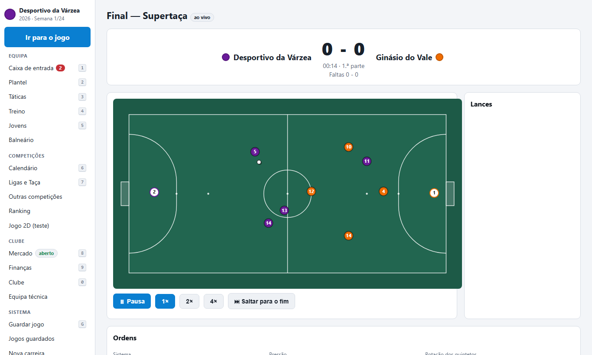
Esta página é uma montra. O jogo não é open source e o código não está publicado.
Porque é diferente
Futsal a sério
Quintetos, rotações, guarda-redes avançado (5x4), faltas acumuladas, livres de 10 m.
Quintetos, rotações, guarda-redes avançado (5x4), faltas acumuladas, livres de 10 m.
Ligas portuguesas
1.ª e 2.ª divisão fictícias, taças e competição internacional.
1.ª e 2.ª divisão fictícias, taças e competição internacional.
Motor 2D
Campo visto de cima, ordens a meio do jogo, repetições e mapas de remates e calor.
Campo visto de cima, ordens a meio do jogo, repetições e mapas de remates e calor.
Funcionalidades
Táticas
Funções, instruções individuais, bolas paradas, preparação com olheiros.
Funções, instruções individuais, bolas paradas, preparação com olheiros.
Equipa técnica e treino
Plano semanal, treino individual, relatórios de evolução.
Plano semanal, treino individual, relatórios de evolução.
Mercado avançado
Cláusulas, empréstimos, empresários, missões de observação.
Cláusulas, empréstimos, empresários, missões de observação.
Balneário
Personalidades, líderes, grupos e queixas.
Personalidades, líderes, grupos e queixas.
Competições
Supertaça, Taça da Liga, internacional fictícia, seleções, ranking.
Supertaça, Taça da Liga, internacional fictícia, seleções, ranking.
Direção e finanças
Patrocinadores, crédito, fair play financeiro, venda do clube.
Patrocinadores, crédito, fair play financeiro, venda do clube.
Capturas
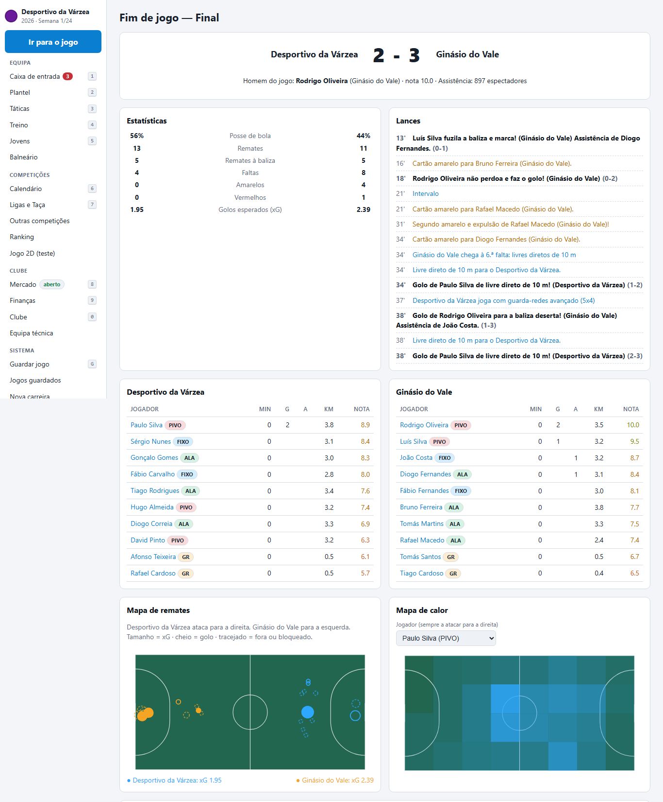
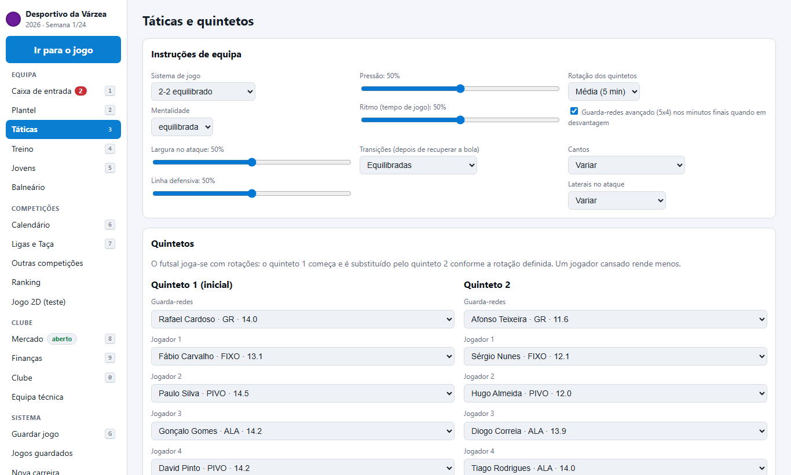
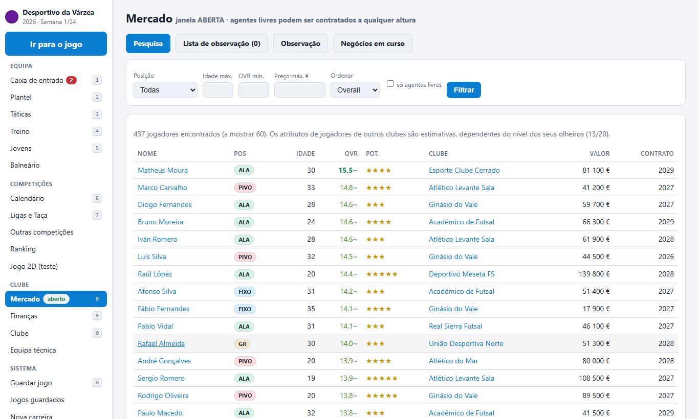
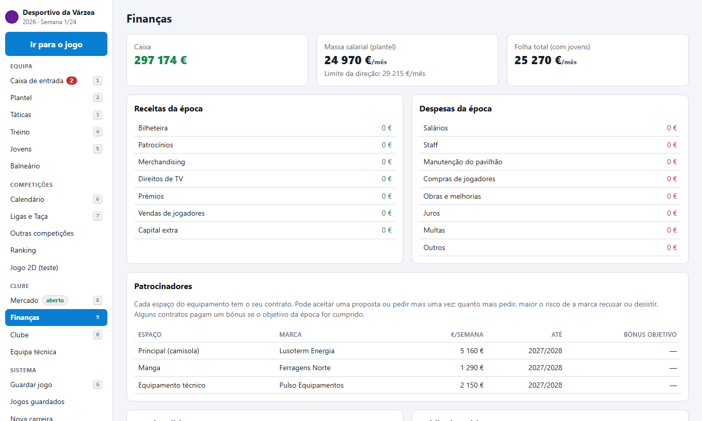
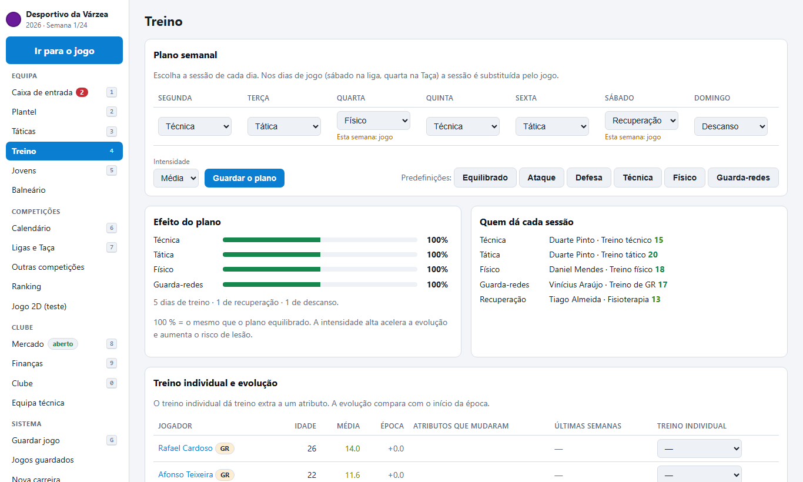
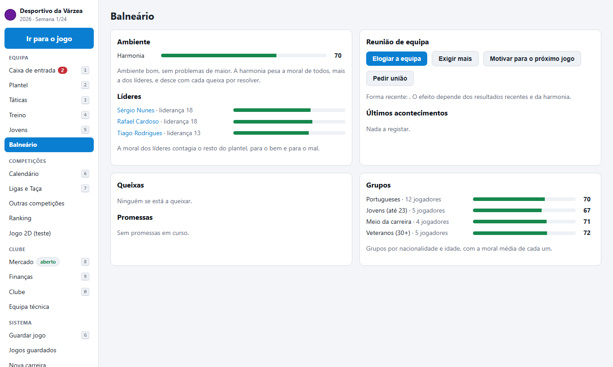
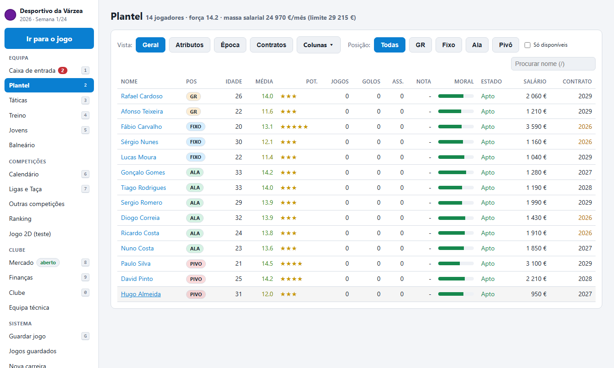
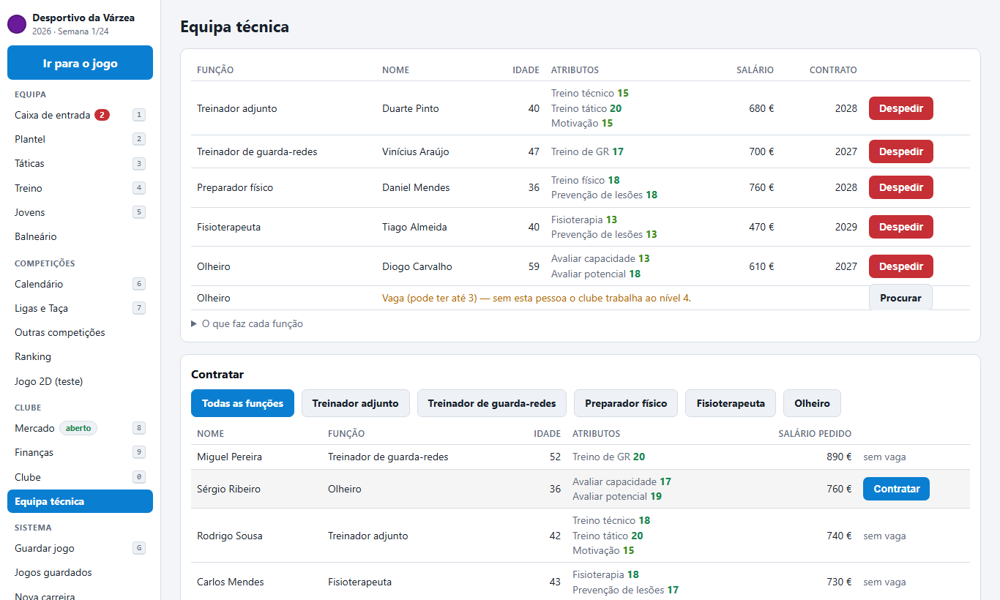
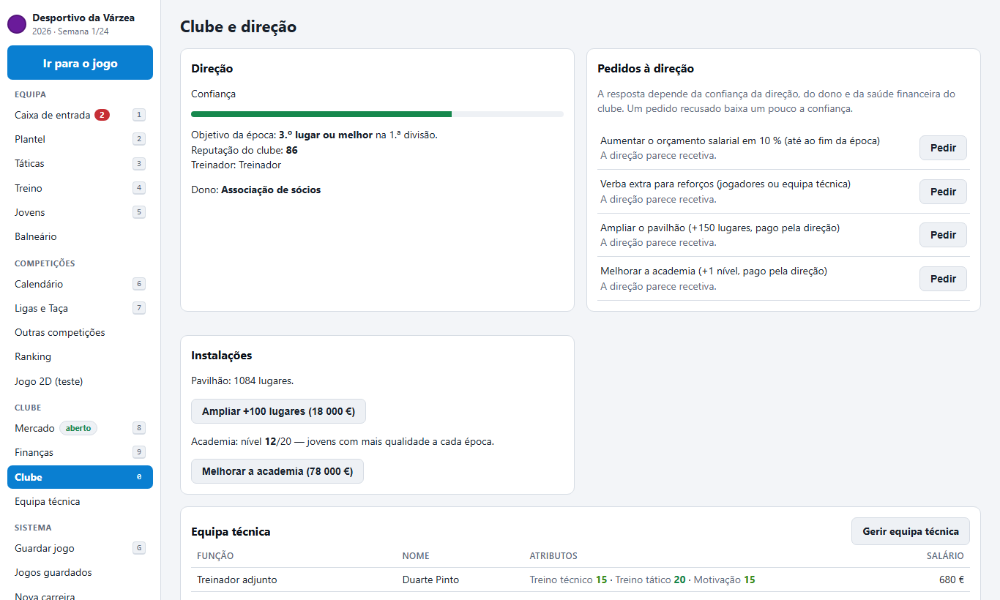
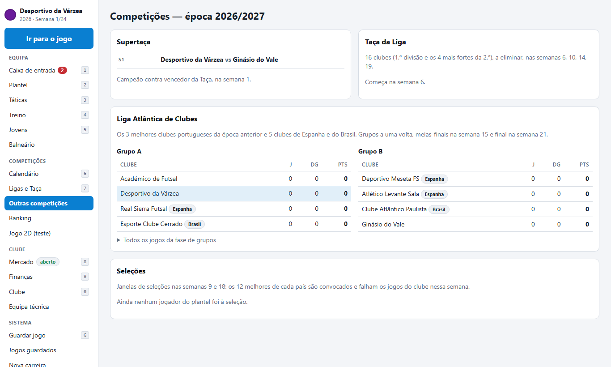
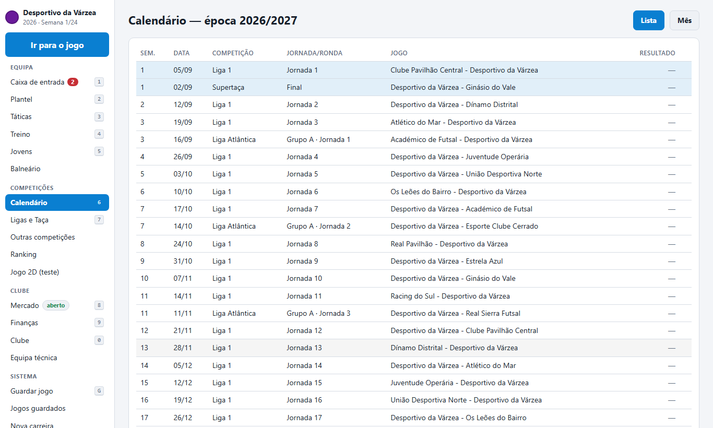
Roteiro
Imprensa · carreira e hall of fame · editor de dados (ligas distritais) · versão para PC · versão para telemóvel.
Apoiar / Patrocinar
Apoiante
Agradecimento público e novidades.
Agradecimento público e novidades.
Nos créditos
O teu nome nos créditos do jogo.
O teu nome nos créditos do jogo.
Clube fictício
Um clube com o nome do teu negócio.
Um clube com o nome do teu negócio.
Patrocinador principal
Marca em destaque no jogo e no projeto.
Marca em destaque no jogo e no projeto.
Apoia no Buy Me a Coffee. Contacto: abrir uma issue.
© 2026 tactivagames-PT. Todos os direitos reservados. Clubes, jogadores e marcas fictícios.